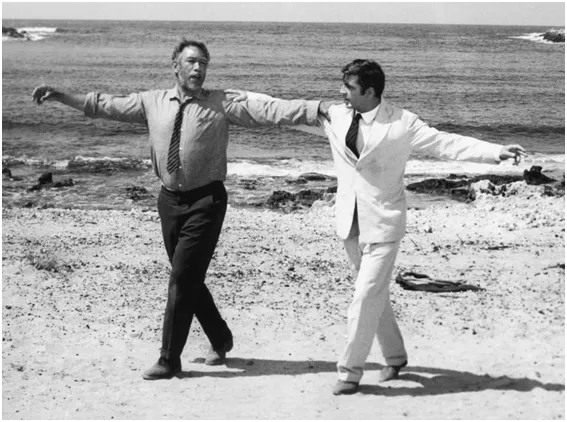
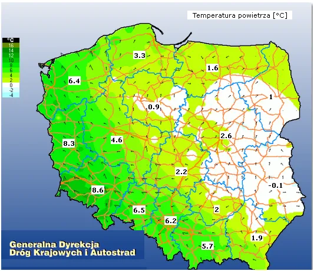
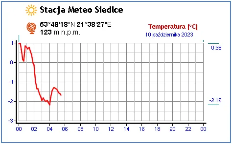
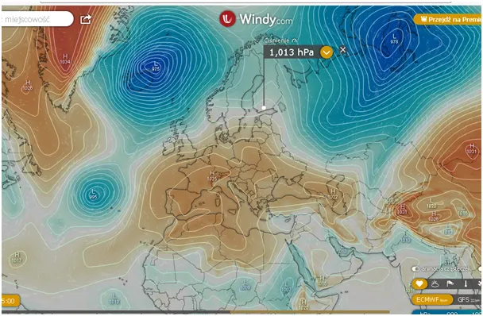
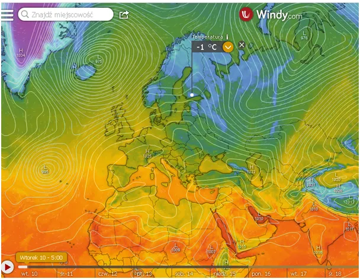

Średnia średnich dąży do średniej i roznosi śmiertelne wirusy. Czy koalicja KO-PiS złamie serca Polaków?
Proste to i zagmatwane zarazem, ale tak to już jest, że w ustabilizowanym układzie, jakim jest np. Układ Słoneczny albo ziemska atmosfera, każda anomalia w jedną stronę zostanie skompensowana anomalią o znaku przeciwnym. Ciepły wrzesień właśnie zostaje skompensowany przymrozkami na wschodzie Polski. Średnia temperatura roczna to średnia z 365 dni i nocy mierzonych w setkach losowych punktów (tak powinno być), i jest ona od setek lat zasadniczo stała.
Średnia temperatura powietrza na danym obszarze zmienia się w poszczególnych latach o ułamki stopnia. Aby powiedzieć czy w perspektywie historycznej rośnie czy spada trzeba spojrzeć na wykres z setek lat. Jako takie pomiary na Ziemi robimy kilkadziesiąt lat, czyli musimy jeszcze poczekać ze 150 lat, aby orzec czy na Ziemi robi się cieplej czy zimniej o ułamek stopnia. Nawet jeśli nastąpi taka zmiana to nie wpłynie to na granice stref upraw poszczególnych gatunków, bo to wyznacza bardziej ukształtowanie terenu niż temperatura.

Tymczasem 10 października A.D. 2023 na wschodzie Polski mamy przymrozki. W Siedlcach spadło poniżej minus 2 st. C, a pamiętajmy, że w mieście jest cieplej o stopień, dwa niż w terenie. W kotlinach może spaść jeszcze bardziej.

Kujawy i Ziemia Dobrzyńska też w okolicach zera. Takie temperatury to skutki długiej, bezgwiezdnej nocy. Jej matką jest wyż znad Alp a ojcem niż znad Atlantyku. Gdy wyż z niżem są blisko, to skutki mamy gwałtowne. Przymrozek mamy też u fińskich wybrzeży Bałtyku. To oznacza szybkie wychłodzenie naszego morza i możliwy szybki przeskok w tryb chłodnej jesieni w regionie.

Prognoza mówi, że po ładnej sobocie 14 października w niedzielę przez Polskę Elekcyjną przejdzie załamanie pogody z zimnym deszczem. Rozsądni młodzi ludzie powinni zadbać, aby seniorzy w taką pogodę nie wychodzili z domu, wszak będzie to początek sezonowej fali zgonów odwirusowych.

Z natury rzeczy przyszłość jest nieznana, ale obecny rozkład sił politycznych balansuje wokół bardzo wąskiego przedziału podziału mandatów i każde promilowe odchylenie zmienia, dla każdej partii, liczbę mandatów w nowym Sejmie. Jak to mówi Jerzy Karwelis bierzemy chipsy i siadamy przed mapą pogody w oczekiwaniu na wyniki wyborów, będzie ciekawie.
Konfederacja dostanie wystarczająco dużo głosów, aby nowy marszałek "Zwitek", nie mógł odbierać bezkarnie poselskich diet. Jako pasjonat dobrych dramatów, osobiście, mimo małych szans, stawiam na koalicję KO-PiS. Niby niemożliwe, ale jaka by to była piękna katastrofa Szefie!
Paweł Klimczewski